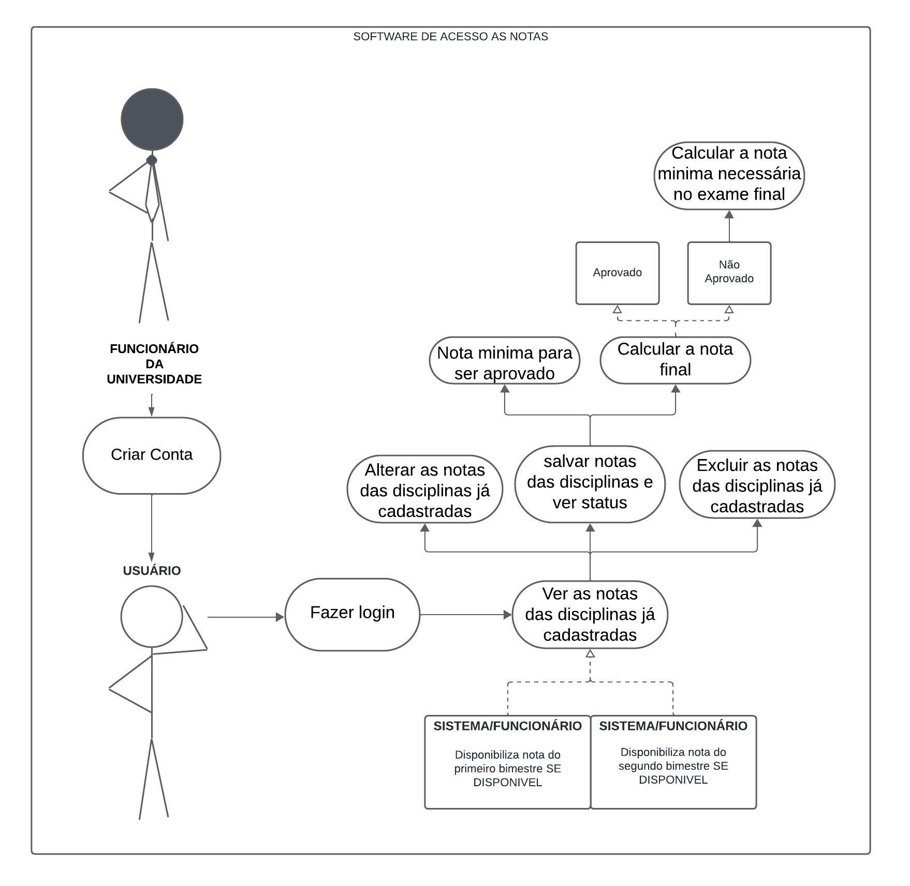
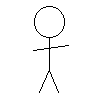
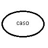
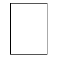
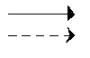
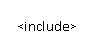
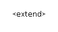

Casos de Uso
Introdução
Os diagramas de casos de uso são um técnica de modelagem utilizada principalmente na engenharia de software para descrever as interações entre um sistema e seus usuários ou outros sistemas, coletando, analisando e especificando suas funções (funcionais ou não). Fazem parte da UML (Unified Modelling Language), uma linguagem que define uma série de artefatos e diagramas que nos ajudam na tarefa de modelar e documentar os sistemas orientados a objetos que desenvolvemos.
Metodologia
Como explicado anteriormente, o artefato utilizado foi o diagrama de casos de uso, integrante da UML. Utilizamos a abordagem padrão para sua criação, composta pelos atores, que representam os usuários e os casos de uso, que representam os requisitos funcionais da aplicação, ou seja, descrevem as ações e interações que o usuário pode realizar dentro do sistema. O software de modelagem utilizado foi o LucidChart.
Diagrama de Casos de Uso - UML

Glossário
Tabela 1: Legenda do Diagrama de Casos de Uso
| Nome | Função | Elemento |
|---|---|---|
| Ator | Bonecos palito que representam os usuários do sistema. |  |
| Caso de Uso | Representa uma funcionalidade do sistema. |  |
| Sistema | Forma retangular usada para representar o sistema ou uma porção dele. |  |
| Relações | São usadas para representar as interações entre os usuários e os casos de uso (funcionalidades). |  |
| Inclusão | Tipo de relação que inclui um caso em outro, tornando a realização da funcionalidade inclusa obrigatória. |  |
| Extensão | Tipo de relação que transforma um caso como extensão de outro, contudo, essa relação não torna sua realização obrigatória. |  |
Especificação dos Casos
Nessa seção estão declaradas as especificações dos casos de uso (tabela 2 a 9).
Requisitos Funcionais
Tabela 2: Calcular a nota mínima necessária para ser aprovado
| UC 01 | Calcular a nota mínima necessária para ser aprovado |
|---|---|
| Descrição | O usuário deve ser capaz de calcular a nota mínima necessária para ser aprovado no bimestre. |
| Ator | Aluno Usuário |
| Prioridade | Essencial |
| Pré-condições | Estar logado; Acesso à internet; Acesso ao app |
| Fluxo Principal | Acessar o aplicativo (cadastro ou login), clicar na disciplina e inserir as notas para cálculo. |
| Pós-condições | Nota mínima para ser aprovado no bimestre |
Tabela 3: Calcular a nota final com as notas do 1° e 2° bimestre
| UC 02 | Calcular a nota final com as notas do 1° e 2° bimestre |
|---|---|
| Descrição | O usuário deve ser capaz de calcular a nota final para saber se ficou de exame final ou não. |
| Ator | Aluno Usuário |
| Prioridade | Essencial |
| Pré-condições | Estar logado; Acesso à internet; Acesso ao app; Notas do 1° e 2° bimestre estarem lançadas |
| Fluxo Principal | Acessar o aplicativo (cadastro ou login), clicar na disciplina e inserir as notas para cálculo. |
| Pós-condições | Nota final do período |
Tabela 4: Calcular a nota mínima necessária para ser aprovado caso o aluno tenha ficado de exame final
| UC 03 | Calcular a nota mínima necessária para ser aprovado caso o aluno tenha ficado de exame final |
|---|---|
| Descrição | O usuário deve ser capaz de calcular a nota mínima necessária para ser aprovado no período caso tenha ficado de exame final. |
| Ator | Aluno Usuário |
| Prioridade | Essencial |
| Pré-condições | Estar logado; Acesso à internet; Acesso ao app; Notas do 1° e 2° bimestre estarem lançadas; Nota final estar lançada |
| Fluxo Principal | Acessar o aplicativo (cadastro ou login), clicar na disciplina e inserir as notas para cálculo. |
| Pós-condições | Nota mínima para ser aprovado no período |
Tabela 5: Salvar as notas de cada disciplina
| UC 04 | Salvar as notas de cada disciplina |
|---|---|
| Descrição | O usuário deve ser capaz de salvar as notas de cada disciplina para eventuais consultas conforme são lançadas. |
| Ator | Aluno Usuário |
| Prioridade | Média |
| Pré-condições | Estar logado; Acesso à internet; Acesso ao app; Notas individuais de cada disciplina |
| Fluxo Principal | À definir. |
| Pós-condições | Notas estarem salvas e de fácil acesso |
Tabela 6: Ver o status das disciplinas (cursando, aprovado, reprovado, ficou exame final)
| UC 05 | Ver o status das disciplinas |
|---|---|
| Descrição | O usuário deve ser capaz de visualizar o seu estado atual em cada disciplina. |
| Ator | Aluno Usuário |
| Prioridade | Baixa |
| Pré-condições | Estar logado; Acesso à internet; Acesso ao app; |
| Fluxo Principal | Acessar o aplicativo (cadastro ou login). |
| Pós-condições | Estar ciente de seu estado atual |
Tabela 7: Ver notas das disciplinas já cadastradas
| UC 06 | Ver notas das disciplinas já cadastradas |
|---|---|
| Descrição | O usuário deve ser capaz de visualizar as notas já lançadas no sistema. |
| Ator | Aluno Usuário |
| Prioridade | Essencial |
| Pré-condições | Estar logado; Acesso à internet; Acesso ao app; Nota estar registrada no sistema |
| Fluxo Principal | Acessar o aplicativo (cadastro ou login). |
| Pós-condições | Estar ciente de sua nota |
Tabela 8: Alterar notas já cadastradas
| UC 07 | Alterar notas já cadastradas |
|---|---|
| Descrição | O usuário deve ser capaz de alterar as notas já cadastradas, caso haja algum erro, problema ou necessidade de mudança. |
| Ator | Funcionário da Universidade |
| Prioridade | Baixa |
| Pré-condições | Estar logado; Acesso à internet; Acesso ao app; Nota estar cadastrada |
| Fluxo Principal | À definir. |
| Pós-condições | Nota ser alterada conforme a necessidade |
Tabela 9: Excluir uma disciplina cadastrada
| UC 08 | Excluir uma disciplina cadastrada |
|---|---|
| Descrição | O usuário deve ser capaz de excluir uma disciplina cadastrada no sistema. |
| Ator | Funcionário da Universidade |
| Prioridade | Baixa |
| Pré-condições | Estar logado; Acesso à internet; Acesso ao app; Disciplina estar cadastrada no sistema |
| Fluxo Principal | Acessar o aplicativo (cadastro ou login), clicar no ícone de lixeira acima da disciplina e confirmar exclusão. |
| Pós-condições | Disciplina ser excluída dos registros |
Especificação Suplementar
Nessa seção estão declaradas as especificações complementares do sistema, requisitos que se encontram dentre usabilidade, confiabilidade, desempenho e suportabilidade.
Requisitos Não Funcionais
Usabilidade
Tabela 10: Requisitos de Usabilidade
| ID | Descrição |
|---|---|
ES01 |
O design deve ser claro e eficiente, de forma que o usuário consiga navegar pelo sistema facilmente. |
ES02 |
O aplicativo deve ser acessível para usuários com deficiências. |
Confiabilidade
Tabela 11: Requisitos de Confiabilidade
| ID | Descrição |
|---|---|
ES03 |
O usuário deve ter a possibilidade de alterar suas informações pessoais. |
ES04 |
O aplicativo deve tratar os dados do usuário com responsabilidade. |
ES05 |
Realizar backups regulares para evitar a perca significativa de dados. |
ES06 |
Fornecer procedimentos de recuperação de conta. |
Desempenho
Tabela 12: Requisitos de Desempenho
| ID | Descrição |
|---|---|
ES07 |
O aplicativo deve fornecer os cálculos de forma rápida e eficiente; preferencialmente inferior a 3 segundos. |
ES08 |
O aplicativo deve ser capaz de lidar com o significativo aumento de tráfego simultâneo. |
Suportabilidade
Tabela 13: Requisitos de Suportabilidade
| ID | Descrição |
|---|---|
ES09 |
O aplicativo deve ser compátivel com sistemas operacionais inferiores, de forma que consigam migrar para as novas sem dificuldade. |
ES10 |
Deve possuir padrões de segurança reconhecidos, como o ISO 27001. |
ES11 |
O aplicativo deve possuir apoio e suporte a problemas e dúvidas que possam ocorrer ao usuário. |